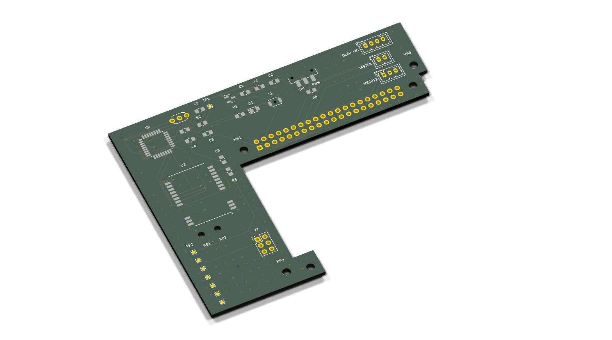

Dieses Handbuch richtet sich an Einsteigerinnen und Einsteiger. Du brauchst keine Elektronik-Ausbildung — aber einen Lötkolben, etwas Geduld und die Bereitschaft, Befehle in ein Terminal zu tippen. Jeder Schritt ist vollständig beschrieben: Was du tust, warum du es tust, und woran du erkennst, dass es geklappt hat.
Befehle für das Terminal sehen so aus — sie werden Zeile für Zeile eingegeben
und mit Enter abgeschickt. Zeilen, die mit # beginnen,
sind Kommentare und werden nicht eingetippt:
# Das ist ein Kommentar — nur zur Erklärung
sudo apt update
Wer ein Homematic-Funksystem betreibt, kennt das Gefühl: Ein Fensterkontakt meldet sich nur sporadisch, ein Heizkörperthermostat reagiert verzögert, und niemand weiß, warum. Der Funkverkehr ist unsichtbar — man sieht nur, ob etwas ankommt oder nicht.
Der AskSin-Analyzer macht diesen Funkverkehr sichtbar. Er ist ein passiver Mithörer: Er empfängt jedes BidCoS-Telegramm im 868-MHz-Band — auch die der Nachbarn —, sendet aber selbst niemals. Aus dem Mitgehörten entstehen drei Dinge:
| Was | Wozu |
|---|---|
| Duty-Cycle je Gerät | Jeder Sender darf pro Stunde nur 1 % der Zeit senden (36 Sekunden). Wer dagegen verstößt — etwa ein defektes Gerät in einer Sendeschleife — legt zeitweise das ganze Funknetz lahm. Der Analyzer zeigt, wer wie viel sendet. |
| Empfangspegel (RSSI) | Wie laut kommt jedes Gerät an? Werte um −50 dBm sind sehr gut, ab etwa −95 dBm wird es kritisch. So findet man Funklöcher und schlecht platzierte Geräte. |
| Telegrammraten und Stille | Sendet ein Gerät plötzlich gar nicht mehr? Oder viel häufiger als sonst? Beides ist ein Frühwarnsignal. |
Die bekannten AskSinAnalyzer-Varianten laufen auf einem ESP32 mit Display. Unser Aufbau zielt auf Dauerbetrieb im Verteilerschrank:
Das System besteht aus zwei Rechnern, die sich die Arbeit teilen — und genau diese Teilung macht es zuverlässig:
Alles, was zwischen Mikrocontroller und Pi fließt, ist lesbarer Text. Eine typische Zeile:
:5A0E0100701A2B3C0000000102030405;
| Feld | Beispiel | Bedeutung |
|---|---|---|
| RSSI | 5A | Empfangspegel als Betrag: hex 5A = 90 → −90 dBm |
| Länge | 0E | Telegrammlänge laut BidCoS: 14 Byte |
| Zähler | 01 | Laufende Nummer des Senders — Lücken = verpasste Telegramme |
| Flags | 00 | Steuerbits (z. B. „Antwort erwartet", „Burst") |
| Typ | 70 | Telegrammtyp — 0x70 ist WEATHER, ein Wetterdatentelegramm |
| Absender | 1A2B3C | Geräteadresse des Senders (3 Byte) |
| Empfänger | 000000 | Zieladresse — 000000 ist Rundruf an alle |
| Nutzdaten | 0102… | Der Inhalt, z. B. Temperatur und Luftfeuchte |
Zusätzlich schickt der Empfänger alle 750 ms eine Kurzzeile wie
:5B; — das ist das Grundrauschen des Kanals, also der
Pegel, wenn gerade niemand sendet. Steigt es dauerhaft, stört etwas — etwa ein
schlecht entstörtes Netzteil.
Alles, was du für einen Analyzer brauchst. Die Platine und ihre SMD-Bestückung kommen aus der Fertigung (Kapitel 5), der Rest wird bestellt und selbst aufgelötet.
| Menge | Teil | Bemerkung |
|---|---|---|
| 1 | Raspberry Pi 4 | Modell B, RAM-Größe egal — der Analyzer selbst braucht wenig |
| 1 | PoE-HAT mit durchgeschleiftem 40-Pin-Header | z. B. Waveshare PoE HAT (B). Wichtig ist der Stapelheader obendrauf — der offizielle Raspberry-Pi-PoE+-HAT hat keinen! |
| 1 | microSD-Karte, ab 16 GB | für Raspberry Pi OS |
| 1 | Analyzer-Platine V4, SMD-bestückt | Fertigung nach Kapitel 5 |
Die geprüften Artikelnummern — Details und Alternativen stehen in
hardware/bestellliste-reichelt.md im Projektordner:
| Pos. | Menge | Reichelt-Artikel | Was es ist |
|---|---|---|---|
| J1 | 1 | MPE 094-2-040 | Buchsenleiste 2×20 — die Verbindung zum Pi |
| J2 | 1 | ECON SL6G2 | Stiftleiste 2×3 — der Programmieranschluss |
| J5–J7 | je 1 | JST PH4P ST, JST PH2P ST, JST PH3P ST | Stecker für OLED, Taster, LED |
| — | je 1 | JST PH4P BU, PH2P BU, PH3P BU | die passenden Buchsengehäuse |
| — | ≥ 15 | JST PH CKB | Crimpkontakte (9 gebraucht + Reserve!) |
| Menge | Teil | Quelle / Bezeichnung |
|---|---|---|
| 1 | Funkmodul Ebyte E07-900M10S | cdebyte.com, Antratek, AliExpress. Genau diese Bezeichnung! Das ähnlich heißende E07-900MM10S ist kleiner und hat keinen Antennenanschluss. |
| 1 | Antenne 868 MHz mit SMA-Anschluss | z. B. Stabantenne 3 dBi |
| 1 | IPEX-auf-SMA-Kabel („Pigtail") | Muss U.FL/IPEX-1 sein — MHF2/3/4 sehen ähnlich aus, passen aber nicht. Länge zum Gehäuse einplanen (15–20 cm üblich). |
| 4 + 2 | Abstandsbolzen M2,5 + Schrauben | Befestigung der Platine (4 vorn, 2 stützen hinten) |
| 1 | Kabelbinder, schmal (≤ 2 mm) | Zugentlastung für das Antennenkabel |
Man kann die Platine bestücken, ohne sie zu verstehen — aber mit diesem Kapitel weißt du bei jedem Bauteil, was du gerade auflötest und warum es da sitzt.

Nur der schmale Arm liegt über dem Pi — 8 mm tief, gerade so viel, wie die 2×20-Buchse und die Befestigungsbohrungen brauchen. Alle Bauteile sitzen im Streifen, der parallel neben dem Pi an der Seite des 40-poligen Headers verläuft und höchstens 20 mm breit ist, sowie im Schenkel, der 32 mm hinter der SD-Kante nach hinten aussteht. Vier Gründe:
hardware/kicad/adapter/). Mit dem Adapter laufen sie einwandfrei.
Ab Hardware 0.2.0 ist der Fehler behoben; erkennbar am Bestückungsdruck auf
der Platinenunterseite.| Block | Bauteile | Aufgabe |
|---|---|---|
| Stromversorgung | U1, C1, C2, L1 | Aus den 5 V des Pi macht der Regler U1 saubere 3,3 V. Die Ferritperle L1 hält hochfrequenten Schmutz vom Funkteil fern, C1/C2 puffern. |
| Mikrocontroller | U2, Y1, C3, C4, C9 | Der ATmega328P mit seinem 8-MHz-Taktgeber Y1. C3/C4 stützen die Versorgung direkt am Chip, C9 beruhigt die Messreferenz. |
| Funkmodul | U3, C5 | Das Ebyte-Modul mit dem CC1101-Empfänger. Die Antenne verlässt es über die kleine IPEX-Buchse — auf der Platine selbst gibt es keine einzige Hochfrequenz-Leitung. |
| Reset-Strecke | C8, R2, S1, TP1 | Über GPIO4 des Pi kann der Mikrocontroller neu gestartet werden (für Firmware-Updates, Kapitel 11). C8 koppelt nur den Impuls, R2 hält die Leitung in Ruhe oben, S1 ist der Taster für den Handreset. |
| SPI-Verteilung | R3 | Mikrocontroller, Funkmodul und Programmieranschluss teilen sich den SPI-Bus. R3 sorgt dafür, dass das Funkmodul still ist, während programmiert wird. |
| Status-LED | R1, D1 | Blitzt bei jedem empfangenen Telegramm kurz auf. |
| Peripherie | J5, J6, J7, SW1, R4 | Stecker für OLED-Display, Taster und WS2812-LED des Status-LED-Projekts. Der Schiebeschalter SW1 an der Außenkante wählt, über welchen Pi-Pin die LED-Daten laufen; R4 (330 Ω) ist der gemeinsame Serienwiderstand dahinter. |
| Prüfpunkte | TP1–TP8 | Kleine Messpads für Multimeter und Fehlersuche (Belegung im Anhang). |


doku/schaltplan.pdf).Die Platine wird industriell gefertigt und die kleinteiligen SMD-Bauteile gleich mitbestückt — das ist günstiger und zuverlässiger, als 0805-Widerstände von Hand zu löten. Beschrieben ist der Weg über JLCPCB; andere Fertiger funktionieren analog.
Alles Nötige steckt in einer Datei im Projektordner:
hardware/kicad/AskSin-Analyzer-V3-fertigung.zip ├── gerber/ ← die Platine selbst (für den Fertiger) ├── bestueckung/ ← jlcpcb_bom.csv + jlcpcb_cpl.csv (für die Bestückung) └── doku/ ← Schaltplan und Layout als PDF (für dich)
gerber/ als
eigene ZIP hochladen.)bestueckung/jlcpcb_bom.csv als BOM und
bestueckung/jlcpcb_cpl.csv als CPL-Datei hochladen.| Ref | Bauteil | LCSC-Nr. | Status |
|---|---|---|---|
| U1 | Spannungsregler XC6206P332MR-G (pinkompatibler Ersatz für MCP1754S) | C5446 | Basic |
| U2 | ATmega328P-AU | C14877 | Extended |
| S1 | Taster Omron B3U-1000P (Variante ohne Zentrierstift — gleiche Pads, die kleine Bohrung bleibt leer) | C231329 | Extended |
| Y1 | Resonator Murata CSTLS8M00G53-B0 (bedrahtet — JLCPCB lötet ihn in der Welle mit) | C83707 | Extended |
| L1 | Ferrit BLM21PG300SN1D | C16903 | Extended |
| D1 | LED rot 0805 | C84256 | Basic |
| R1, R4 / R2, R3 | 330 Ω / 10 kΩ | C17630 / C17414 | Basic |
| SW1 | Schiebeschalter C&K JS102011SAQN (wählt PWM oder SPI für die LED-Daten) | C221660 | Extended |
| C1,C2 | 10 µF 25 V | C15850 | Basic |
| C3–C5,C8,C9 | 100 nF 50 V | C49678 | Basic |
Nicht bestückt werden: das Funkmodul U3 (führt JLCPCB nicht) und die bedrahteten Steckverbinder J1, J2 und J5–J7. Die kommen in Kapitel 6 von Hand drauf. Der Resonator Y1 ist zwar auch bedrahtet, wird aber von JLCPCB mitbestückt. Unbestückte Plätze gibt es seit v0.2.0 keine mehr — die frühere Regel „R4 oder R5" hat der Schiebeschalter SW1 abgelöst.
Aus der Fertigung kommt die Platine mit allen Kleinteilen. Von Hand fehlen noch sechs Positionen — in dieser Reihenfolge:
| # | Ref | Bauteil | Schwierigkeit |
|---|---|---|---|
| 1 | U3 | Funkmodul E07-900M10S | mittel — Halblöcher, siehe 6.2 |
| 2 | J2 | ISP-Stiftleiste 2×3 | leicht |
| 3 | J5, J6, J7 | JST-PH-Stecker | leicht |
| 5 | J1 | Buchsenleiste 2×20 | leicht, aber 40 Lötstellen |
Das E07-Modul hat keine Beinchen, sondern Halblöcher (halbrunde, metallisierte Kerben an den Kanten — englisch „castellated holes"). Das lötet sich leichter, als es aussieht:
| Prüfung | Multimeter | Sollwert |
|---|---|---|
| Kurzschluss 5 V ↔ Masse? | Widerstand zwischen TP3 (+5V) und TP4 (GND) | deutlich > 1 kΩ, nicht 0 Ω |
| Kurzschluss 3,3 V ↔ Masse? | Widerstand zwischen TP2 (+3V3) und TP4 | > 1 kΩ, nicht 0 Ω |
| Modul richtig herum? | Sichtprüfung | IPEX-Buchse zeigt zur rechten Kante |
| Lötbrücken an U3? | Lupe | alle 22 Kerben einzeln, keine Verbindungen quer |
Ein fabrikneuer ATmega328P ist ein unbeschriebenes Blatt: Er läuft auf einem langsamen internen Notversorgungs-Takt und weiß nichts von unserem 8-MHz-Resonator. Bevor er Firmware ausführen kann, müssen einmalig zwei Dinge passieren — und beide gehen über den ISP-Anschluss J2:

avrdude ist das Standardwerkzeug zum Programmieren von
AVR-Chips. Auf einem Linux-Rechner (auch dem Pi selbst):
sudo apt update sudo apt install avrdude
Erster Verbindungstest — er liest nur die Signatur des Chips:
avrdude -c usbasp -p m328p -B 8
Erwartete Ausgabe (gekürzt):
avrdude: device initialized and ready to accept instructions
avrdude: Device signature = 0x1e950f (probably m328p)
avrdude done. Thank you.
-B 8 nicht vergessen
Ein fabrikneuer 328P taktet mit nur 1 MHz. -B 8 bremst den
Programmiertakt so weit, dass der Chip mitkommt. Ohne diese Option meldet
avrdude target doesn't answer — der häufigste Anfängerstolperer
überhaupt. Nach dem Setzen der Fuses (8 MHz) ist -B 8 nicht mehr
nötig, schadet aber auch nie.Unsere Werte — sie stellen den Chip auf den externen 8-MHz-Resonator, aktivieren die Spannungsüberwachung und reservieren Platz für den Bootloader:
| Fuse | Wert | Bewirkt |
|---|---|---|
| low (lfuse) | 0xFF | externer Taktgeber 8–16 MHz, kein Teiler — der Chip läuft mit vollen 8 MHz vom Resonator Y1 |
| high (hfuse) | 0xDE | Bootloader-Bereich 512 Byte, Start im Bootloader |
| extended (efuse) | 0xFD | Brown-out bei 2,7 V — der Chip stoppt sauber, statt bei Unterspannung Amok zu laufen |
avrdude -c usbasp -p m328p -B 8 \
-U lfuse:w:0xFF:m -U hfuse:w:0xDE:m -U efuse:w:0xFD:m
avrdude schreibt jede Fuse und liest sie zur Kontrolle zurück
(… verified).
0x05 statt
0xFD an. Das ist kein Fehler: Nur die unteren 3 Bit existieren
physisch, der Rest ist undefiniert und wird mal als 1, mal als 0 gelesen.
0x05 und 0xFD sind derselbe Wert.Wir verwenden Optiboot aus dem MiniCore-Projekt — die Variante für ATmega328P, externe 8 MHz, serielle Schnittstelle UART0, 57 600 Baud. Zwei Wege führen zum Ziel; nimm den, der dir näher liegt.
Die Arduino IDE setzt Fuses und Bootloader in einem Rutsch — wer Weg A geht, kann Abschnitt 7.3 sogar überspringen.
https://mcudude.github.io/MiniCore/package_MCUdude_MiniCore_index.json| Einstellung | Wert |
|---|---|
| Board | MiniCore → ATmega328 |
| Variant | 328P / 328PA |
| Clock | External 8 MHz |
| BOD | 2.7 V |
| Bootloader | Yes (UART0) |
| Programmer | USBasp |
avr/bootloaders/optiboot_flash/bootloaders/atmega328p/):
die Datei für 8000000L, UART0, 57600 Baud — Dateiname nach dem Muster
optiboot_flash_atmega328p_UART0_57600_8000000L.hex.avrdude -c usbasp -p m328p \
-U flash:w:optiboot_flash_atmega328p_UART0_57600_8000000L.hex:iavrdude -c usbasp -p m328p — jetzt ohne
-B 8 — antwortet flott. Vorher (1-MHz-Takt) ging das nur gebremst.| Meldung | Ursache | Abhilfe |
|---|---|---|
target doesn't answer | Programmiertakt zu schnell oder Verkabelung | -B 8 (oder -B 32) verwenden; alle 6 Leitungen gegen das Bild prüfen — MISO/MOSI vertauscht ist Klassiker |
cannot find USB device | USBasp nicht erkannt / Rechte | anderes Kabel/Port; unter Linux ggf. mit sudo testen, dauerhaft besser eine udev-Regel |
invalid device signature 0x000000 | Chip bekommt keinen Strom oder RESET klemmt | Jumper 3,3 V? Steckt Pin 2? Taster S1 versehentlich gedrückt/verklemmt? |
| Signatur ≠ 0x1e950f | Kontaktproblem | Leitungen kürzen (< 20 cm), erneut versuchen |
Die Firmware ist der unveränderte AskSinSniffer328P-Sketch von jp112sdl — bewährt, tausendfach im Einsatz, und genau deshalb übernehmen wir ihn Byte für Byte statt einen eigenen zu pflegen.
github.com/jp112sdl/AskSinAnalyzer als ZIP
herunterladen und entpacken. Der Sketch liegt im Ordner
AskSinSniffer328P/.| Bibliothek | Woher |
|---|---|
| AskSinPP | github.com/pa-pa/AskSinPP → „Code → Download ZIP" → in der Arduino IDE über Sketch → Bibliothek einbinden → .ZIP-Bibliothek hinzufügen |
| EnableInterrupt | Arduino-Bibliotheksverwalter (Suche: „EnableInterrupt") |
| Low-Power | Bibliotheksverwalter (Suche: „Low-Power", Autor Rocket Scream) |
AskSinSniffer328P.ino in der IDE öffnen.Wer lieber auf der Kommandozeile arbeitet: Dem Sketch liegt eine
platformio.ini bei.
# einmalig: PlatformIO-CLI installieren (python3 vorausgesetzt) pip install platformio cd AskSinAnalyzer/AskSinSniffer328P # kompilieren und über USBasp brennen pio run pio run -t program
Noch am USBasp (der versorgt die Platine mit 3,3 V) muss jetzt die LED D1 beim Empfang blitzen, sobald ein Homematic-Gerät in der Nähe sendet — zum Provozieren reicht es, einen Fensterkontakt zu öffnen. Kein Blitzen ist noch kein Beinbruch: Ohne Antenne ist die Reichweite winzig. Der belastbare Test folgt in Kapitel 9 am Pi.
Die gute Nachricht vorweg: Die gesamte Software-Installation ist ein einziger Befehl. Ein Assistent stellt dir ein paar Fragen, alles Weitere — Node.js, Dienste, Berechtigungen, sogar die Einrichtung der seriellen Schnittstelle — erledigt der Installer selbst. Dieses Kapitel erklärt jeden Schritt und jede Frage, damit du weißt, was du antwortest und warum.
sudo raspi-config → Advanced → Boot Order auf USB stellen.asksin-analyzer-01), Benutzer, SSH und ggf. WLAN setzen — dann
läuft alles ohne Monitor („headless"). Der Hostname gehört dir und deiner
Netzwerkstruktur; die Software ändert ihn nie von sich aus.ssh benutzer@asksin-analyzer-01.curl -fsSL https://raw.githubusercontent.com/ssbingo/asksin-analyzer-rpi/main/install.sh | sudo bash
Der Installer ist idempotent: Du kannst ihn jederzeit erneut ausführen — er aktualisiert dann die Installation und stellt die Fragen noch einmal (deine bestehende Konfiguration behält er auf Wunsch). Was er der Reihe nach tut:
/opt/asksin-analyzer, danach wird
die Weboberfläche gebaut (dauert auf dem Pi ein paar Minuten — normal).asksin mit den Gruppen
dialout (serieller Port) und gpio — der Dienst läuft
bewusst ohne Root-Rechte.| Frage | Empfehlung und Hintergrund |
|---|---|
| Standortname (Vorgabe: Hostname) | z. B. „Keller" oder „DG-Ost". Ein reines Anzeige-Etikett für Weboberfläche, Verbund und Auswertungen — es ändert den Hostnamen nicht. Später jederzeit unter Einstellungen → Standort & Zentrale änderbar. |
| IP/Hostname der CCU | Adresse deiner CCU/RaspberryMatic — daher bekommt der Analyzer die Gerätenamen. Leer lassen geht auch: dann erscheinen Geräte als Hex-Adressen, bis du die CCU später in den Einstellungen einträgst. |
| HTTP-Port (Vorgabe 8080) | Einfach Enter, außer 8080 ist bei dir belegt. |
| Im LAN erreichbar machen? | Ja — sonst kommst du vom PC nicht an die Weboberfläche. („Nein" bindet den Dienst nur an 127.0.0.1 — sinnvoll, wenn ein Reverse-Proxy davor sitzt.) |
| Schreibzugriffe mit Token schützen? | Ja. Der Installer erzeugt ein Zufalls-Token und zeigt es am Ende an — notieren! Ohne Token kann jeder im LAN Einstellungen ändern oder die Datenbank leeren. Details in Kapitel 21. |
| Verbund-Master? | „Ja" auf genau einem Analyzer — dem, der die Gesamtübersicht aller Standorte zeigen soll. Alle anderen: „Nein". Die eigentliche Verknüpfung passiert später bequem in der Weboberfläche (Kapitel 17). |
| Status-LED und OLED einrichten? | „Ja" nur, wenn du das Zubehör an J5–J7 anschließt (Kapitel 18). Aktiviert I²C und SPI — danach ist ein Neustart nötig. Später jederzeit über die Weboberfläche nachholbar. |
| UART für den Sniffer-HAT einrichten? | Ja. Richtet GPIO14/15 als serielle Schnittstelle ein (Details unten). Braucht am Ende einen Neustart, den der Installer anbietet. |
http://<pi-ip>:8080 — und das
notierte Token unter Einstellungen → Zugriff eintragen. Solange die
Platine noch nicht steckt, meldet die Kopfzeile „Sniffer getrennt" und der
Dienst versucht es geduldig weiter — das ist der Normalzustand ohne HAT.
Zum Ausprobieren gibt es den Demo-Modus (Kapitel 14).enable_uart=1 + dtoverlay=disable-bt — das
Bluetooth-Modem räumt die „gute" Hardware-UART, die miniUART mit ihrer
schwankenden Baudrate wird umgangen. (Pi 5: dtparam=uart0=on.)/dev/asksin-hat — egal, in welcher Reihenfolge der Kernel die
Schnittstellen aufzählt.w1-gpio (1-Wire) aktiv ist — das würde GPIO4
belegen, unsere Reset-Leitung.Für den Alltag brauchst du die Konsole nicht — alles Wichtige geht über die
Weboberfläche. Falls doch, installiert der Installer den Befehl
asksin-analyzer:
| Befehl | Zweck |
|---|---|
asksin-analyzer status | Läuft der Dienst? |
asksin-analyzer logs | Live-Protokoll (Strg+C beendet) |
asksin-analyzer health | Kurzcheck der API |
asksin-analyzer config | Konfigurationsdatei bearbeiten |
asksin-analyzer restart | Dienst neu starten |
sudo asksin-analyzer update | Update von Hand (geht auch per Klick, Kapitel 15) |
stty -F /dev/ttyAMA0 58824 raw -echo cat -v /dev/ttyAMA0
Jetzt sollte etwa alle Dreiviertelsekunde eine Rauschzeile erscheinen und — sobald ein Homematic-Gerät sendet — eine lange Telegrammzeile:
:5B;
:5A;
:460B2AA011ABCDEF1234560201;
:5B;
Beenden mit Strg+C. Damit ist die Hardware komplett
nachgewiesen: Funkempfang, Dekodierung, serielle Strecke — alles läuft.
M-^?xM-^E statt lesbarer Hexzeilen = falsche Baudrate.
Prüfe, ob wirklich 58824 gesetzt ist — 57600 liefert genau dieses
Bild (die 2,1 % Abweichung aus Kapitel 2 in Aktion).

Die drei JST-Kabel nach diesen Belegungen crimpen (oder fertige Kabel entsprechend umpinnen). Die Nase der Stecker verhindert Verpolen — was passt, passt richtig. Softwareseitig sind Display, Taster und LED inzwischen fest in die Analyzer-Software integriert — kein zweiter Dienst, keine eigene Anleitung mehr nötig. Alles Weitere (Aktivieren, Farben, Anzeigeseiten) steht in Kapitel 18.
Dank Bootloader (Kapitel 7) braucht ein Firmware-Update später weder Ausbau noch USBasp — der Pi erledigt es selbst über die serielle Schnittstelle. Nur eines fehlt der Pi-UART: die Reset-Leitung, mit der avrdude den Chip normalerweise in den Bootloader schickt. Dafür hat die Platine die GPIO4-Reset-Strecke: Ein kurzer Low-Impuls auf GPIO4 wird über den Kondensator C8 als Reset-Puls an den Mikrocontroller weitergereicht.
Seit Software 0.0.4 flasht der Analyzer den 328P selbst — du lädst nur die HEX-Datei im Browser hoch:
Wer sehen will, was dabei technisch passiert — oder es ohne Weboberfläche braucht:
# 1. Analyse-Dienst anhalten (er belegt den Port) sudo systemctl stop asksin-analyzer # 2. avrdude starten — es wartet auf den Bootloader … avrdude -c arduino -p m328p -P /dev/asksin-hat -b 58824 -D \ -U flash:w:AskSinSniffer328P.hex:i & # 3. … und sofort den Reset-Impuls geben: sleep 0.2 timeout 0.3 gpioset -c gpiochip0 4=0 || true # libgpiod 2.x (Bookworm) # bei älteren Systemen (libgpiod 1.x) stattdessen: # gpioset --mode=time --usec=300000 gpiochip0 4=0 wait # 4. Dienst wieder starten sudo systemctl start asksin-analyzer
Der Ablauf dahinter: Die fallende Flanke auf GPIO4 läuft durch C8 und zieht RESET für etwa eine Millisekunde auf Masse. Der Chip startet neu, der Bootloader lauscht eine Sekunde lang auf der seriellen Schnittstelle — und genau dort wartet schon avrdude mit der neuen Firmware.
AskSinSniffer328P.ino.hex — die Variante ohne
„with_bootloader" im Namen verwenden). Mit PlatformIO liegt sie nach
pio run unter .pio/build/…/firmware.hex.Die Software auf dem Pi ist ein einziger, dauerhaft laufender Dienst
(analyzerd, per systemd überwacht und bei Absturz automatisch neu
gestartet). Innen ist er eine Kette klar getrennter Bausteine:
| Baustein | Aufgabe |
|---|---|
| Serial-Ingest | Liest den Zeilenstrom des Sniffers mit 58 824 Baud. Ein Watchdog nutzt aus, dass der Sniffer alle 750 ms eine Rauschzeile schickt: bleibt die Leitung still, gilt sie als tot und wird automatisch neu aufgebaut (mit ansteigenden Wartezeiten). Ein voller Puffer verwirft die ältesten Zeilen — Live-Daten sind wichtiger als lückenlose Historie. |
| Parser | Zerlegt jede Zeile in ihre Felder, prüft Hex-Alphabet, Längenbyte und Pegel-Plausibilität. Kaputte Zeilen werden gezählt statt verschluckt — steigende Fehlzähler sind ein Frühwarnsignal (z. B. driftende Baudrate). |
| Statistik | Duty-Cycle je Sender über ein gleitendes Stundenfenster (formelgleich mit dem etablierten AskSinAnalyzerXS), Grundrauschen geglättet, Telegrammrate, RSSI je Gerät. |
| Datenbank | SQLite direkt im Node.js eingebaut — keine Zusatzsoftware. Einzeltelegramme (30 Tage), Rauschwerte je Minute (90 Tage), Stundensummen je Gerät (1 Jahr); die Aufbewahrung räumt täglich automatisch auf, die Datenbank kann also nicht endlos wachsen. |
| Namensauflösung | Holt stündlich die Geräteliste von der CCU und cacht sie als Datei — nach einem Neustart sind die Namen sofort da, auch wenn die CCU gerade schläft. |
| API + Weboberfläche | Eine REST-API liefert alles als JSON; dieselbe API bedient die eingebaute Weboberfläche (Kapitel 13), den Verbund (Kapitel 17) und den ioBroker-Adapter (Kapitel 20). Zusätzlich gibt es den Kompatibilitäts-Endpunktsatz der originalen AskSinAnalyzer-Web-App. |
stty, Datenbank über das eingebaute
node:sqlite, I²C/SPI über Bordwerkzeuge. Was nicht installiert
wird, kann nicht kaputtgehen, keine Sicherheitslücke einschleppen und keine
Update-Kette blockieren — bei einem Gerät, das jahrelang unbeaufsichtigt im
Schrank läuft, ist das Gold wert.| Teil | Lizenz | Warum |
|---|---|---|
| Core-Dienst (Analyse) | CC BY-NC-SA | Parser-/Formel-Herkunft aus den Analyzer-Vorprojekten |
| Weboberfläche | MIT | kompletter Eigenbau (Vue 3 + ECharts) — nur der API-Vertrag wurde übernommen |
| ioBroker-Adapter | MIT | eigenes Repo, spiegelt nur States, keinerlei Analyse-Logik |
| Pfad | Inhalt |
|---|---|
/opt/asksin-analyzer | die Software (Git-Arbeitskopie) |
/etc/asksin-analyzer/config.json | Grundkonfiguration (Installer/Experten) |
/var/lib/asksin-analyzer/ | Datenbank, Geräteliste-Cache, alle über die Weboberfläche gesetzten Einstellungen, Update-Protokolle |
Alles, was du in der Weboberfläche einstellst (Standort,
Verbund-Peers, Demo, Statusanzeige, Langzeitdaten), landet in
/var/lib/asksin-analyzer/ und überlebt Updates wie Neustarts.
Die Weboberfläche ist die Schaltzentrale des Analyzers — erreichbar unter
http://<pi-ip>:8080, ohne App, ohne Cloud. Sie besteht aus fünf
Ansichten (Übersicht, Telegramme, Verbund, Einstellungen, Info) und einer
Kopfzeile, die auf jeder Seite dieselben Informationen trägt.


Die Liste füllt sich von selbst (neueste oben, maximal 500 im Speicher). Jede Zeile zeigt Zeit, RSSI (farbig: grün ≥ −65 dBm, orange bis −85, rot darunter), Absender und Empfänger (aufgelöster Name plus Hex-Adresse), Länge, laufende Nummer, Typ (z. B. WEATHER, CONFIG — HmIP-Typen blau), Flags (z. B. BURST, BIDI) und die Roh-Nutzdaten. Werkzeuge: Textfilter (sucht in Namen, Adressen und Typ), Pause (friert die Anzeige ein, ohne Daten zu verlieren) und Leeren.

Jedes Panel dieser Seite hat sein eigenes Kapitel; hier der Überblick:
| Panel | Inhalt | Details |
|---|---|---|
| Verbund | weitere Analyzer verknüpfen/entfernen | Kapitel 17 |
| Netzwerk | DHCP/Statisch, Hostname, NTP — mit Aussperr-Schutz | Kapitel 16 |
| Standort & Zentrale | Standortname (reines Etikett!) und CCU-Adresse | — |
| Zugriff | Auth-Token dieses Browsers | Kapitel 21 |
| Status-LED & OLED | Zubehör aktivieren, Helligkeit | Kapitel 18 |
| Langzeitdaten | InfluxDB-Anbindung | Kapitel 19 |
| Demo-Modus | simulierte Anlage ein/aus | Kapitel 14 |
| Daten | Tages-CSV herunterladen, Datenbank leeren, Dienst neu starten | — |
Alle Änderungen wirken sofort (nur der Demo-Schalter startet den Dienst kontrolliert neu) und überleben Neustarts wie Updates.

Kacheln mit Core-Version, Laufzeit, Datenbankgröße und Host-Daten; darunter die Empfangszähler seit Dienststart — besonders wertvoll die Zeile „verworfen": steigt sie plötzlich, stimmt etwas an der seriellen Strecke. Es folgen Software-Update und Sniffer-Firmware (Kapitel 15/11) und die Herkunftsnennung der Original-Projekte, auf denen dieser Analyzer aufbaut.
Der Demo-Modus lässt den kompletten Analyzer laufen, ohne dass eine Platine steckt oder eine Homematic-Zentrale existiert — ideal zum Kennenlernen, zum Vorführen und um die Weboberfläche zu erkunden, während die Platine noch beim Fertiger liegt.
Einstellungen → Demo-Modus → einschalten, Rückfrage bestätigen — der Dienst startet neu (die Seite verbindet sich nach wenigen Sekunden von selbst), und in der Kopfzeile erscheint die orange DEMO-Plakette. Ausschalten geht genauso; danach liest der Analyzer wieder die echte Hardware.
Die Simulation setzt am untersten Ende an: Sie erzeugt exakt die Zeilen, die der echte Sniffer über die serielle Schnittstelle schicken würde — Telegramme, die 750-ms-Rauschzeilen, sogar gelegentliche Störimpulse. Parser, Statistik, Datenbank, API und Weboberfläche laufen dabei unverändert — was du im Demo-Modus siehst, ist die echte Software bei der Arbeit, nur die Funkwellen sind erfunden.
Die Demo-Anlage umfasst rund 15 Geräte mit Charakter: Wettersensoren, Heizkörperthermostate, Bewegungsmelder (mit Burst-Telegrammen), HmIP-Fensterkontakte, eine Strommess-Steckdose — und absichtlich ein „defektes" Gerät (Defekt_BWM Carport (klemmt)), das dauersendet und nach kurzer Zeit die Duty-Cycle-Liste mit roter Warnfarbe anführt. So siehst du auch die Alarmseite der Anzeige.
analyzer-demo.db) mit kurzer Aufbewahrung. Deine echten
Aufzeichnungen werden weder gelesen noch verändert — nach dem Ausschalten
ist alles exakt wie vorher.Eine Minute nach jedem Dienststart und danach alle 24 Stunden vergleicht der Analyzer seinen Software-Stand mit dem Projekt auf GitHub. Gibt es etwas Neues, erscheint in der Kopfzeile die pulsierende 🔔 Update-Plakette — auf jeder Seite, nicht zu übersehen. Ein Klick darauf führt zur Info-Seite.
Das Update ist atomar und rückrollbar gebaut: Die neue
Weboberfläche wird erst vollständig gebaut und dann in einem Zug getauscht;
nach dem Neustart prüft ein Gesundheits-Check 30 Sekunden lang, ob der
Dienst mit dem neuen Stand sauber antwortet. Tut er das nicht, stellt
das Update selbstständig den vorherigen Stand wieder her — Software
und Oberfläche. Ein misslungenes Update kann dir den Analyzer also nicht
lahmlegen. Protokolle liegen unter
/var/lib/asksin-analyzer/update.log, der Fortschritt übersteht
sogar den Neustart des Dienstes.
Unter Einstellungen → Netzwerk verwaltest du die Netzwerkkonfiguration des Pi komplett im Browser — DHCP oder statische Adresse, Gateway, DNS, Hostname und NTP-Server. Die Seite zeigt zuerst nur den Ist-Zustand (bei DHCP inklusive der zugewiesenen Werte); geändert wird erst, wenn du ausdrücklich „Übernehmen" klickst.
Wer die IP-Adresse ändert, sägt am Ast, auf dem seine Browser-Verbindung sitzt. Deshalb gelten neue Netzwerkeinstellungen zunächst nur auf Probe:
de.pool.ntp.org. Synchrone Uhren sind
Pflicht, sobald mehrere Analyzer im Verbund arbeiten — der Verbund warnt bei
Abweichungen über einer Sekunde (Kapitel 17).Ab zwei Analyzern beginnt der eigentliche Zauber dieses Projekts: Jedes Funktelegramm wird meist von mehreren Standorten gleichzeitig gehört — mit unterschiedlicher Stärke. Aus genau diesen Unterschieden entsteht die Funk-Landkarte des Hauses.

Jeder Analyzer ist von Haus aus verbundfähig. „Master" wird schlicht der, bei dem du die anderen einträgst:
http://192.168.1.72:8080), optional Name und dessen Auth-Token
(nur fürs Flotten-Update nötig), Verknüpfen.Die Änderung wirkt sofort; der eigene Standort erscheint automatisch als erste Kachel. Hinterlegte Tokens werden nie wieder angezeigt.
Je Standort eine Kachel: Sniffer-Status, Telegramme/min, Grundrauschen, höchster Duty-Cycle, Software-Version — plus Plaketten für Demo-Modus und verfügbare Updates und ein Link direkt in die Weboberfläche des jeweiligen Analyzers. Ein ausgefallener Standort erscheint als „nicht erreichbar", stört aber die Übersicht nicht. Weicht die Uhr eines Standorts mehr als eine Sekunde ab, warnt die Kachel („NTP prüfen!") — denn die Telegramm-Zusammenführung braucht synchrone Uhren.
Zeile = Funkgerät, Spalte = Standort, Zelle = geglätteter Empfangspegel in Farbe; ★ markiert den besten Empfang, „—" heißt „an diesem Standort nie gehört". Damit beantwortest du auf einen Blick: Wo sind Funklöcher? Welcher Analyzer „besitzt" welches Gerät? Wohin gehört die nächste Antenne? Der Knopf CSV herunterladen exportiert die Matrix für die Planung am Schreibtisch.
Gleicher Absender + gleiche laufende Nummer + gleicher Typ und Länge innerhalb von ±1,5 Sekunden = ein Funkereignis. Die Liste zeigt jedes Telegramm genau einmal, mit farbigen Chips je Standort: Keller (−62) DG (−88). So siehst du je Ereignis sofort, wer es wie gut gehört hat.
Der Knopf Alle Analyzer aktualisieren… rollt ein Software-Update über alle Standorte aus — bewusst vorsichtig: nacheinander, jeder Analyzer erst nach bestandenem Gesundheits-Check des vorherigen. Scheitert ein Schritt, stoppt der Lauf (der betroffene Analyzer hat lokal längst automatisch zurückgerollt, Kapitel 15) und die restlichen bleiben unangetastet. Der Master aktualisiert sich zum Schluss. Für Peers mit Token-Pflicht muss deren Token beim Verknüpfen hinterlegt sein.
Mit dem Zubehör an J5–J7 (Anschluss: Kapitel 10.3, SW1-Hinweis beachten!) zeigt der Analyzer seinen Zustand direkt am Gerät — ein Blick in den Schrank genügt.
Entweder im Installer („Status-LED und OLED einrichten? Ja") oder jederzeit
nachträglich: Einstellungen → Status-LED & OLED — LED und OLED
einzeln schaltbar, Helligkeitsregler, sofort wirksam. Einzige Voraussetzung:
I²C/SPI müssen einmal freigeschaltet sein (macht der Installer; nachträglich
sudo raspi-config → Interface Options). Fehlt etwas, zeigt die
Übersicht ehrlich „LED gestört"/„OLED gestört" samt Fehlertext.
Das Display wird von einem eigenen Dienst gezeichnet
(asksin-analyzer-oled), der dieselben Bibliotheken verwendet wie
das Vorbildprojekt Status-LED-OLED: adafruit_ssd1306 als Treiber,
Pillow zum Zeichnen und DejaVuSans-Bold als Schrift.
Der Installer richtet ihn mit ein. Schlägt das fehl, lässt es sich einzeln
nachholen, ohne den ganzen Installer:
sudo /opt/asksin-analyzer/deploy/oled-einrichten.sh 32 Vorgabe ist
128 × 32 — die Adafruit PiOLED und die Einstellung des
Vorbilds. 0,96-Zoll-Module sind meist 128 × 64; dann beim
Installer „2" wählen bzw. das Skript mit 64 aufrufen.
Der Unterschied ist nicht kosmetisch: Multiplex-Verhältnis und COM-Pin-Lage der Init-Sequenz hängen daran. Mit den falschen Werten zeigt das Panel ein verdoppeltes, unleserliches Bild — es sieht dann so aus, als sei die Schrift zu klein oder das Display defekt.
| Farbe/Muster | Bedeutung |
|---|---|
| 🟢 grün, ruhig | alles in Ordnung |
| 🔵 blau, atmend | Software-Update verfügbar |
| 🟠 orange, ruhig | Demo-Modus aktiv |
| 🟡 gelb, langsam blinkend | Persistenz-Fehler (Datenbank prüfen) |
| 🔴 rot, ruhig | Sniffer getrennt — keine Daten von der Platine |
| 🔴 rot, schnell blinkend | Duty-Cycle-Alarm: ein Gerät verbraucht ≥ 80 % seines Sendekontingents |
Die Reihenfolge ist eine Prioritätsleiter — es leuchtet immer der wichtigste Zustand.

Der Aufbau folgt dem Vorbild: kleine Beschriftung oben links, darunter der Wert — waagerecht zentriert und in der größten Schrift, die noch in die Breite passt. Kopf- und Fußzeilen gibt es bewusst nicht; sie müssten in der kleinen Schrift stehen und wären auf einem 0,96-Zoll-Panel nicht mehr zu entziffern.
Die Reihenfolge beim Blättern:
| Seite | zeigt |
|---|---|
| 1 Standort | der Anzeigename dieses Analyzers |
| 2 Sniffer | BEREIT / GETRENNT / DEMO |
| 3 Telegramme | je Minute |
| 4 Rauschen | Grundrauschen in dBm |
| 5 Geräte | aktive Funkgeräte |
| 6 Duty-Cycle | Spitzenwert in Prozent |
| 7 … ! Gerätename | je Dauersender eine eigene Seite — siehe unten |
| Version | Softwarestand |
| IP · MAC · Host | Netzwerk |
| CPU · RAM · Up | Temperatur und Last, Speicher, Laufzeit |
| Disk · Fan | freier Platz, Lüfterdrehzahl — nur wenn vorhanden |
| letzte Seite | Übersicht: IP, CPU, RAM, Sniffer — vier Zeilen wie im Vorbild |
Ein einziges defektes Funkgerät kann das ganze Netz zustopfen — im Demo-Modus heißt es bezeichnenderweise „Defekt_BWM Carport (klemmt)". Die Duty-Cycle-Seite zeigt nur den höchsten Wert; welches Gerät dahinter steckt, sah man dort nicht.
Deshalb bekommt jedes Gerät ab 80 % Duty-Cycle eine eigene
Seite: der Name als Beschriftung oben, mit vorangestelltem
„!", der Prozentwert groß darunter. Das sind dieselben 80 %, ab
denen auch die LED rot blinkt. Höchstens fünf solcher Seiten — sonst wird das
Durchblättern am Gerät zur Zumutung. Beruhigt sich ein Gerät wieder,
verschwindet seine Seite von selbst.
| Haltedauer | Wirkung |
|---|---|
| ab 50 ms (kurz) | eine Seite weiter |
| ab 5 Sekunden | „Neustart…" erscheint auf dem Display |
| 3 Sekunden später | der Raspberry Pi startet neu |
Die drei Sekunden Anzeige sind Absicht: Wer versehentlich zu lange drückt, sieht noch, was gleich passiert, und kann eingreifen. Die Zeiten sind unverändert aus dem Vorbildprojekt übernommen.
Neustarten darf der Analyzer-Dienst nicht selbst — er läuft unprivilegiert. Er legt eine Auslöserdatei an, auf die ein eng begrenzter Root-Helfer wartet; dasselbe Muster wie bei Update und Netzwerkeinstellungen.
Der Taster schaltet GPIO17 gegen Masse; einen eigenen Widerstand gibt es nicht. Ist nichts angeschlossen, „schwebt" der Eingang und erzeugt aus Einstreuung fortlaufend Schaltflanken. Deshalb wird er nur überwacht, wenn der Anzeigedienst wirklich zeichnet — sonst steht im Protokoll „Anzeigedienst meldet kein Bild — Taster bleibt inaktiv". Kommen wider Erwarten mehr als 50 Flanken je Sekunde, stellt der Dienst die Überwachung ein und vermerkt das; ein Mensch drückt nicht 50-mal je Sekunde.
Für Auswertungen über Wochen und Monate — und über alle Standorte hinweg — schreibt jeder Analyzer seine Kennzahlen zusätzlich in eine zentrale InfluxDB v2 (z. B. auf deinem Server oder einem NAS-Container). Die lokale Datenbank bleibt dabei die primäre Aufzeichnung; fällt die InfluxDB aus, merkt der Analyzer sich das nur als Zähler und macht unbeirrt weiter.
asksin) und ein API-Token
mit Schreibrecht darauf anlegen.http://server:8086), Organisation, Bucket, Token, Intervall
(Vorgabe 30 s), Haken bei „aktiv", Speichern. Sofort wirksam; das Panel
zeigt Schreibvorgänge und eventuelle Fehler. Das Token wird nach dem
Speichern nie wieder angezeigt (leeres Feld = vorhandenes behalten).| Measurement | Tags | Felder |
|---|---|---|
analyzer | standort | connected, telegrammeProMinute, grundrauschen, geraete |
geraet | standort, adresse, name | rssi, dutyCycle, telegramme |
In Grafana (Datenquelle: deine InfluxDB) entstehen daraus z. B.
„Grundrauschen aller Standorte übereinander", „Duty-Cycle-Trend von Gerät X
über 30 Tage" oder „RSSI-Verlauf eines Sensors an drei Standorten" — nach
standort gruppieren, fertig. Beispielabfragen stehen in
docs/verbund.md im Projekt.
Der Adapter ioBroker.asksinanalyzer-rpi (eigenes Repository, MIT-Lizenz) bringt die Analyzer-Werte als States in deine Hausautomation — für Visualisierung, Benachrichtigungen und Automatik-Regeln. Er enthält bewusst keinerlei Analyse-Logik: Er fragt nur die API des Analyzers ab und spiegelt die Werte.
https://github.com/ssbingo/ioBroker.asksinanalyzer-rpi
(alternativ an der Konsole: iobroker url …).http://<pi>:8080), ggf. das
Auth-Token des Analyzers, Abfrageintervall (Vorgabe 5 s).| Zweig | Inhalt |
|---|---|
info.* | connection (erreichbar und Sniffer verbunden), Standort, Version, Demo, Update verfügbar |
funk.* | Telegramme/min, Grundrauschen (roh + geglättet), aktive Geräte, höchster Duty-Cycle samt Gerätename |
zaehler.* | Telegramme, Neuverbindungen, verlorene Zeilen, Persistenz-Fehler seit Dienststart |
geraete.<ADRESSE>.* | je Funkgerät: Name, RSSI (letzter/geglättet), Duty-Cycle, Telegramme, zuletzt gehört — Channels entstehen automatisch |
verbund.<STANDORT>.* | nur bei der Instanz des Verbund-Masters: je Standort erreichbar, Sniffer-Status, Kennzahlen, Version, Update-Flag und zeitdriftWarnung — ein fertiger Auslöser für „NTP prüfen an Standort X"-Benachrichtigungen |
funk.maxDutyCycle > 80 („Gerät X sendet
sich das Kontingent leer"), bei info.connection = false länger als
5 Minuten („Analyzer Keller meldet sich nicht") oder bei
verbund.*.zeitdriftWarnung = true.Lesen ist frei, Ändern braucht das Token. Alle Anzeige-Endpunkte (Übersicht, Listen, Verbund) sind im LAN offen — das ist gewollt, ein Funkanalyzer zeigt keine Geheimnisse. Alles, was etwas verändert (Einstellungen, Updates, Firmware-Flash, Netzwerk, Datenbank leeren), verlangt das beim Setup erzeugte Token. Du trägst es einmal je Browser unter Einstellungen → Zugriff ein; es bleibt nur in diesem Browser gespeichert.
sudo grep authToken /etc/asksin-analyzer/config.jsonManche Störungen zeigen sich erst nach Stunden — der Analyzer ist plötzlich nicht mehr erreichbar, und hinterher weiß niemand, warum. Genau dafür führt die Software ein Protokoll: eine Textdatei je Tag, in der mitgeschrieben wird, was passiert ist. Zu finden unter Wartung in der Weboberfläche.

| Stufe | Was hineinkommt | Wann sinnvoll |
|---|---|---|
| Fehler | Nur Störungen | Dauerbetrieb, kleinste Datei |
| Info | Störungen und wichtige Ereignisse | Vorgabe |
| Debug | Zusätzlich Abläufe im Inneren | Fehlersuche |
| Alles | Auch einzelne Telegramme | Kurzzeitig, wächst schnell |
Daneben stellst du ein, wie viele Tage aufgehoben werden (1 bis 365). Beim Tageswechsel legt der Dienst eine neue Datei an und löscht, was älter ist als die Frist. Beides wirkt sofort, ohne Neustart.
Neben den Meldungen der Anwendung selbst erhebt der Analyzer jede Minute die Werte, an denen sich ein Ausfall im Nachhinein festmachen lässt — und schreibt sie alle 15 Minuten in eine Zeile:
| Wert | Warum er zählt |
|---|---|
| Unterspannung und Drosselung | Mit PoE-HAT und SSD am USB die häufigste Ursache für Einfrieren und harte Neustarts. Der Pi merkt sich auch, ob es seit dem Einschalten schon einmal vorkam. |
| Temperatur | Ab etwa 80 °C drosselt der Pi, ab 85 °C hart. |
| Arbeitsspeicher | Wird er knapp, räumt das System Programme ab — ohne dass diese eine Fehlermeldung hinterlassen. |
| Freier Plattenplatz | Eine volle Systempartition legt Dienste still. |
| Systemlast und Laufzeit | Springt die Laufzeit auf wenige Sekunden, hat das Gerät neu gestartet. |
Das eigene Protokoll zeigt nur, was der Analyzer selbst mitbekommt. Ob eine
Störung aus dem System kam, steht im Journal des Betriebssystems — in
Zeilen, die unser Programm nie zu sehen bekommt. Der Dienst liest sie deshalb
mit und übernimmt sie unter [systemlog]: Unterspannungsmeldungen
des Kernels, abgeräumte Programme bei Speichermangel, neu angemeldete
USB-Geräte (die Boot-SSD!), Dateisystemfehler, Temperaturnotabschaltungen,
Kernel-Abstürze.
Nach jedem Start bewertet der Dienst außerdem, wie der vorherige Lauf endete. Fand sich dort keine Abmeldung, steht ganz oben in der neuen Tagesdatei:
FEHLER [systemlog] Der vorherige Systemlauf wurde NICHT sauber beendet —
Hinweis auf Stromausfall, Spannungseinbruch oder
Kernel-Absturz, nicht auf einen Fehler dieser Anwendung
Damit das funktioniert, richtet der Installer zweierlei ein: Der Dienst darf das Journal lesen, und das Journal wird dauerhaft gespeichert. Ab Werk legt Raspberry Pi OS es nur flüchtig im Arbeitsspeicher ab — nach einem harten Absturz wäre genau der interessante Teil verloren.
FEHLER und nach [system] suchen.
Steht dort Unterspannung, ist die Stromversorgung die Ursache — dann
hilft kein Software-Update, sondern ein kräftigeres Netzteil beziehungsweise
ein PoE-Injektor mit mehr Reserve.Die Datei ist bewusst in festen Spalten geschrieben, damit sie sich sowohl lesen als auch durchsuchen lässt:
2026-07-31 08:12:33.123 FEHLER [ingest] Port weg (EIO) 2026-07-31 08:12:34.001 INFO [system] Temperatur 62,3 °C · Speicher frei 940 MB
| Symptom | Wahrscheinliche Ursache | So prüfst/behebst du es |
|---|---|---|
Keine Ausgabe an /dev/ttyAMA0 | UART nicht eingerichtet oder Konsole aktiv | sudo hardware/setup-uart.sh --check ausführen; nach Änderungen neu starten. Existiert /dev/ttyAMA0 überhaupt? (ls -l /dev/ttyAMA*) |
Nur wirre Zeichen statt :…;-Zeilen | Baudrate 57600 statt 58824 | stty -F /dev/ttyAMA0 58824 raw -echo — Kapitel 2 erklärt, warum |
| Rauschzeilen kommen, aber nie Telegramme | Antenne fehlt/lose, oder kein BidCoS-Verkehr | IPEX-Stecker eingerastet? Ein Homematic-Gerät bewusst auslösen (Fensterkontakt). Prüfen, ob Geräte klassisches Homematic (nicht nur HmIP) sind |
| Gar keine Rauschzeilen (auch nach 2 s nichts) | Firmware fehlt oder Chip startet nicht | Blitzt D1 beim Einschalten kurz? Kapitel 7/8 wiederholen; an TP2 3,3 V gegen TP4 messen |
avrdude: target doesn't answer | Programmiertakt zu hoch / Verkabelung | -B 8 ergänzen; MISO↔MOSI prüfen (Kapitel 7.5) |
Bootloader-Update schlägt fehl (not in sync) | Reset-Impuls kam zu früh/spät oder Dienst belegt Port | Reihenfolge aus Kapitel 11 exakt einhalten; sudo fuser /dev/ttyAMA0 zeigt Belegungen |
| Empfang schlecht (RSSI ständig unter −95 dBm) | Antenne im Metallschrank oder Störer | Antenne nach außen verlegen; Grundrauschen beobachten: steigt es ohne Telegramme, stört eine Quelle in der Nähe (Netzteile!) |
| Funkmodul wird heiß | Es hat irgendwann 5 V gesehen | Sofort stromlos machen. Modul ist vermutlich defekt — auslöten, neues Modul, künftig Jumper-Regel aus Kapitel 7 beachten |
| Weboberfläche nicht erreichbar | Dienst gestoppt oder nur an 127.0.0.1 gebunden | asksin-analyzer status; in config.json muss "host": "0.0.0.0" stehen (LAN-Frage des Installers) |
| Kopfzeile dauerhaft „Sniffer getrennt" | HAT steckt nicht / UART nicht eingerichtet / Baudrate | Ohne Platine normal. Sonst: asksin-analyzer logs — steht dort ein Gerätefehler, Kapitel 9 (UART-Frage des Installers) wiederholen |
| Geräte heißen nur „1A2B3C" statt Klarnamen | CCU nicht erreichbar oder CCU-Script fehlt | CCU-Adresse in Einstellungen → Standort & Zentrale prüfen; auf der CCU muss die Systemvariable AskSinAnalyzerDevList befüllt werden (Kapitel 12/CCU-Script im Repo) |
| „Nicht erlaubt" beim Speichern in der Weboberfläche | Auth-Token fehlt in diesem Browser | Token unter Einstellungen → Zugriff eintragen (Kapitel 21; vergessen? sudo grep authToken /etc/asksin-analyzer/config.json) |
| 🔔-Glocke erscheint nie | Pi ohne Internetzugang zu GitHub | asksin-analyzer logs zeigt „Aktualitätsprüfung fehlgeschlagen"; Update dann von Hand: sudo asksin-analyzer update |
| Verbund-Kachel warnt „Uhr weicht ab" | NTP auf einem Analyzer nicht synchron | Auf dem betroffenen Gerät Einstellungen → Netzwerk: Zeile „NTP aktuell" muss „synchron" zeigen — sonst NTP-Server setzen (Vorgabe de.pool.ntp.org) |
| Flotten-Update meldet „Auth-Token fehlt" | Peer verlangt Token, keines hinterlegt | Peer entfernen und mit seinem Token neu verknüpfen (Einstellungen → Verbund) |
Dienst startet nicht, Journal zeigt listen EACCES … :80 | Port unter 1024 gewählt; der Dienst läuft ohne Rechte dafür | Seit dieser Fassung bringt die Unit AmbientCapabilities=CAP_NET_BIND_SERVICE mit — sudo asksin-analyzer update genügt. Alternativ in /etc/asksin-analyzer/config.json einen Port ab 1024 eintragen (8080) und sudo asksin-analyzer restart |
Permission denied auf /dev/spidev0.0 oder /dev/i2c-1 | Dienstbenutzer nicht in den Gruppen spi/i2c | sudo asksin-analyzer update zieht die Gruppen nach; danach sudo systemctl restart asksin-analyzer |
| Status-LED bleibt dunkel | Schalter SW1 steht auf der anderen Betriebsart, oder SPI bzw. das Onboard-Audio ist nicht passend eingestellt | Kapitel 10.3 (SW1-Kasten): Schalterstellung mit Einstellungen → Status-LED & OLED abgleichen. Auf Pi 3/4 muss zusätzlich das Onboard-Audio aus sein, auf Pi 5 der SPI-Bus an. Die Übersicht zeigt „LED gestört" mit Ursache |
| OLED bleibt dunkel | I²C nicht aktiv oder Kabelbelegung | sudo raspi-config → I²C aktivieren; i2cdetect -y 1 muss 3c zeigen; J5-Belegung gegen Kapitel 10.3 prüfen |
| 1-Wire-Sensoren funktionieren nicht mehr | w1-gpio kollidiert mit GPIO4 (Reset) | In config.txt: dtoverlay=w1-gpio,gpiopin=17 o. ä. — nicht GPIO4 |
| Pi-Pin | Signal | Verwendung |
|---|---|---|
| 1 | 3V3 | durchgereicht an OLED (J5) und LED (J7) |
| 2, 4 | 5V | Versorgung der Platine |
| 3, 5 | GPIO2/3 (I²C) | durchgereicht ans OLED — von der Platine unangetastet |
| 7 | GPIO4 | Reset-Impuls für Firmware-Updates |
| 8 | GPIO14 (TXD) | Pi sendet → Mikrocontroller |
| 10 | GPIO15 (RXD) | Mikrocontroller sendet → Pi (der Telegrammstrom) |
| 11 | GPIO17 | Taster (J6) |
| 12 | GPIO18 | WS2812-Daten, Schalter SW1 auf PWM (J7) |
| 19 | GPIO10 | WS2812-Daten, Schalter SW1 auf SPI (J7) |
| 6, 9, 14, 20, 25, 30, 34, 39 | GND | Masse |
| Pad | Signal | Sollwert im Betrieb |
|---|---|---|
| TP1 | RESET | 3,3 V (Ruhe) |
| TP2 | +3,3 V | 3,25–3,35 V |
| TP3 | +5 V | 4,8–5,2 V |
| TP4 | GND | Bezugspunkt |
| TP5 | TXD (328P → Pi) | ~3,3 V, zuckt bei jedem Telegramm |
| TP6 | RXD (Pi → 328P) | ~3,3 V Ruhe |
| TP7 | GDO0 | Interrupt vom Funkchip |
| TP8 | CS | SPI-Auswahl Funkmodul |
| Begriff | Bedeutung |
|---|---|
| BidCoS | „Bidirectional Communication Standard" — das Funkprotokoll klassischer Homematic-Geräte |
| Bootloader | Mini-Programm im Chip, das neue Firmware über die serielle Schnittstelle annimmt |
| Duty-Cycle | Sendezeit-Anteil eines Geräts; gesetzlich auf 1 % pro Stunde begrenzt |
| Fuses | Konfigurationsbytes des AVR-Chips (Takt, Bootloader, Schutz) — nur über ISP änderbar |
| Halblöcher | halbrunde Lötkerben an Modulkanten („castellated holes") |
| IPEX / U.FL | Miniatur-Antennensteckverbinder auf Funkmodulen |
| ISP | „In-System Programming" — Programmieren des Chips direkt auf der Platine (J2) |
| LDO | Spannungsregler (hier: 5 V → 3,3 V) |
| PoE | Power over Ethernet — Strom über das Netzwerkkabel |
| RSSI | Empfangspegel in dBm; näher an 0 = stärker |
| UART | serielle Schnittstelle (zwei Drähte: senden, empfangen) |
Dieses Projekt wäre ohne die Vorarbeit dieser Autoren nicht denkbar:
Hardware, Firmware-Anteile und dieses Handbuch stehen unter CC BY-NC-SA 4.0 (Namensnennung, nicht-kommerziell, Weitergabe unter gleichen Bedingungen).
AskSin-Analyzer · Handbuch Ausgabe 2 · Juli 2026 · Software 0.9.0 · erzeugt aus
docs/handbuch/handbuch.html